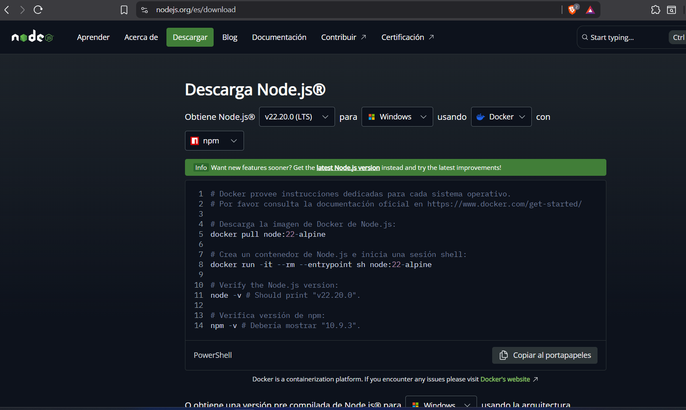
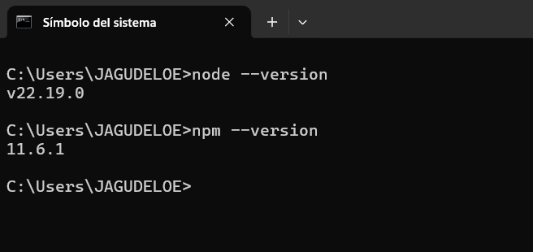
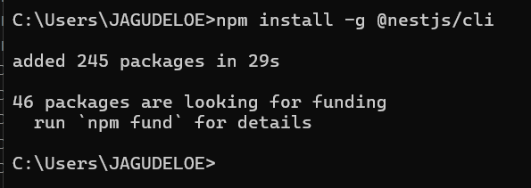
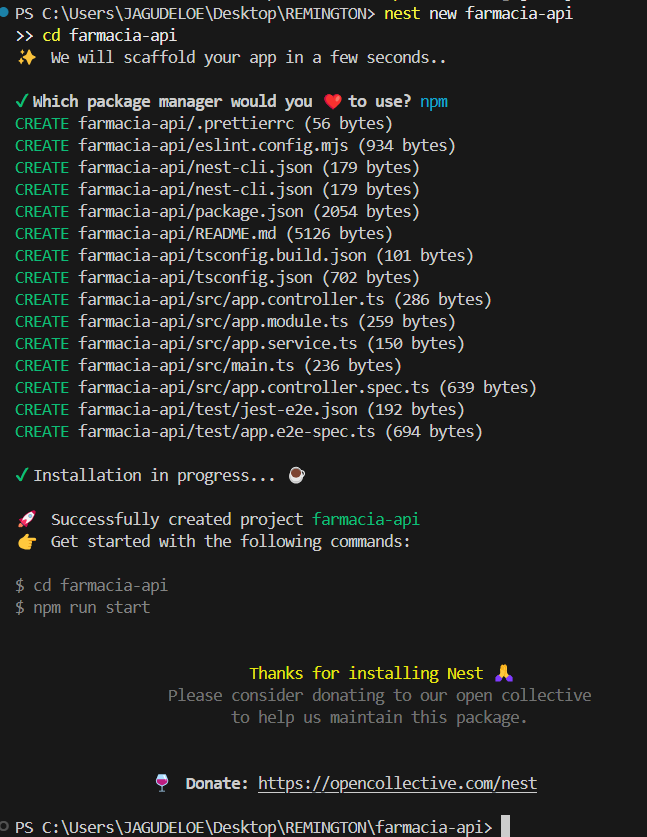
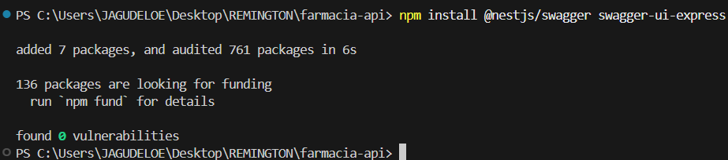
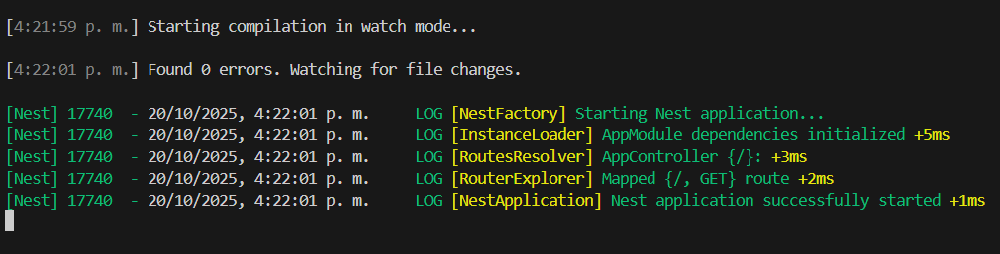
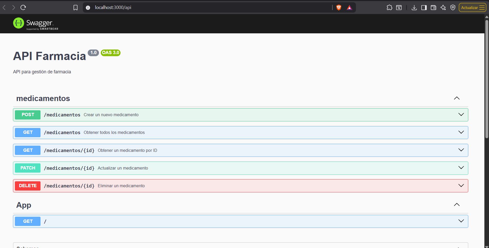

INGENIERÍA DE SISTEMAS
LENGUAJE DE PROGRAMACIÓN - 2510B01G1
Primer parcial (25%)
JEFFREY ALEXANDER AGUDELO ESPITIA
CC: 1094955981
TULUÁ - VALLE DEL CAUCA
1. ¿Qué es una API?
Definición
Una API (Application Programming Interface) o Interfaz de Programación de Aplicaciones es un conjunto de definiciones, protocolos y herramientas que permite que diferentes aplicaciones de software se comuniquen entre sí. Actúa como un intermediario que permite que dos aplicaciones intercambien datos y funcionalidades de manera estandarizada y segura.
Una API define las reglas y especificaciones que los desarrolladores deben seguir para interactuar con un sistema, servicio o biblioteca. Estas reglas incluyen qué solicitudes se pueden hacer, cómo hacerlas, qué formatos de datos utilizar y qué respuestas esperar.
Importancia de las APIs en la comunicación de aplicaciones
Las APIs son fundamentales en el desarrollo de software moderno por las siguientes razones:
| Aspecto | Importancia |
| Interoperabilidad | Permiten que sistemas desarrollados en diferentes lenguajes y plataformas se comuniquen sin problemas |
| Reutilización | Los desarrolladores pueden aprovechar funcionalidades existentes sin necesidad de reinventar la rueda |
| Escalabilidad | Facilitan la construcción de sistemas modulares que pueden crecer y adaptarse |
| Seguridad | Proporcionan una capa controlada de acceso a datos y funcionalidades sensibles |
| Integración | Permiten conectar servicios de terceros (pagos, autenticación, mapas, etc.) |
| Mantenimiento | Separan la lógica del negocio de la interfaz de usuario, facilitando actualizaciones |
2. Principios de una API RESTful
¿Qué es REST?
REST (Representational State Transfer) es un estilo arquitectónico para diseñar APIs que se basa en el protocolo HTTP. Fue definido por Roy Fielding en el año 2000 y se ha convertido en el estándar de facto para el desarrollo de servicios web modernos.
Principios fundamentales de REST
| Principio | Descripción |
| Cliente-Servidor | Separación clara entre el cliente (interfaz de usuario) y el servidor (almacenamiento de datos). Permite que evolucionen independientemente. |
| Sin estado (Stateless) | Cada petición del cliente debe contener toda la información necesaria. El servidor no guarda información de sesión entre peticiones. |
| Cacheable | Las respuestas deben indicar si son cacheables o no, mejorando el rendimiento al reducir peticiones innecesarias. |
| Interfaz uniforme | Uso consistente de URLs, métodos HTTP y formatos de datos (generalmente JSON). |
| Sistema de capas | El cliente no necesita saber si está conectado directamente al servidor o a través de intermediarios. |
| Recursos | Todo se representa como recursos identificados por URIs únicas. |
Métodos HTTP en APIs RESTful
Los métodos HTTP definen las operaciones que se pueden realizar sobre los recursos. Los cuatro métodos principales corresponden a las operaciones CRUD:
| Método HTTP | Operación CRUD | Descripción | Ejemplo |
| GET | Read (Leer) | Obtiene uno o varios recursos. No modifica datos. |
GET /api/products GET /api/products/5 |
| POST | Create (Crear) | Crea un nuevo recurso en el servidor. |
POST /api/products {name: "Laptop", price: 500} |
| PUT | Update (Actualizar) | Actualiza completamente un recurso existente. |
PUT /api/products/5 {name: "Laptop Pro", price: 600} |
| DELETE | Delete (Eliminar) | Elimina un recurso del servidor. | DELETE /api/products/5 |
| PATCH | Update parcial | Actualiza parcialmente un recurso (solo campos específicos). |
PATCH /api/products/5 {price: 550} |
Convenciones comunes en APIs RESTful
-
URLs descriptivas: Usar sustantivos en plural para
recursos (
/products,/users) -
Jerarquía de recursos:
/users/1/orders/5para relaciones anidadas -
Códigos de estado HTTP:
200 OK- Operación exitosa201 Created- Recurso creado exitosamente-
400 Bad Request- Error en la petición del cliente 401 Unauthorized- Autenticación requerida404 Not Found- Recurso no encontrado500 Internal Server Error- Error del servidor
- Formato JSON: Usar JSON como formato estándar de intercambio de datos
-
Versionado:
/api/v1/productspara mantener compatibilidad -
Filtrado y paginación:
/products?category=electronics&page=2&limit=10
3. Instalación de Node.js y NestJS
¿Por qué NestJS en lugar de Express?
Aunque el trabajo solicitaba Express, se ha optado por NestJS por las siguientes razones:
- Arquitectura estructurada: NestJS proporciona una arquitectura modular basada en TypeScript
- Escalabilidad: Ideal para proyectos empresariales grandes
- Integración con Swagger: Documentación automática de APIs
- Decoradores y DI: Sistema de inyección de dependencias robusto
- Basado en Express: Internamente usa Express (o Fastify)
Paso 1: Instalación de Node.js
Node.js es el entorno de ejecución de JavaScript que permite ejecutar código fuera del navegador.

Comandos de verificación:
node --versionnpm --version

Paso 2: Instalación de NestJS CLI
El CLI de NestJS facilita la creación y gestión de proyectos.
npm install -g @nestjs/cli

Paso 3: Crear proyecto NestJS
nest new farmacia-apicd farmacia-api

Paso 4: Instalación de Swagger para documentación
npm install @nestjs/swagger swagger-ui-express

Paso 5: Iniciar el servidor
npm run start:dev

Configuración de Swagger y Creación de Endpoints
Paso 6: Configurar Swagger en main.ts
Para habilitar la documentación automática de la API, configuramos Swagger en el archivo principal:
src/main.ts:Paso 7: Crear módulo de Medicamentos
Generamos el módulo completo con controlador y servicio usando el CLI de NestJS:
nest generate resource medicamentos
Esto crea automáticamente:
medicamentos.module.ts- Módulomedicamentos.controller.ts- Controlador con endpointsmedicamentos.service.ts- Lógica de negociodto/- Carpeta para objetos de transferencia de datosentities/- Carpeta para entidades
Paso 8: Crear DTOs (Data Transfer Objects)
Definimos la estructura de datos para crear medicamentos:
src/medicamentos/dto/create-medicamento.dto.ts:Paso 9: Implementar el Controlador
Definimos los endpoints RESTful en el controlador:
src/medicamentos/medicamentos.controller.ts:Paso 10: Implementar el Servicio
El servicio contiene la lógica de negocio. Por ahora, usaremos datos en memoria:
src/medicamentos/medicamentos.service.ts:Paso 11: Probar los Endpoints
Una vez configurado todo, reinicia el servidor y accede a:
- Swagger UI:
http://localhost:3000/api - GET todos los medicamentos:
http://localhost:3000/medicamentos - GET medicamento por ID:
http://localhost:3000/medicamentos/1
Resultado Final
Con estos pasos, habrás creado:
- ✅ Servidor NestJS corriendo en puerto 3000
- ✅ Documentación Swagger interactiva
- ✅ Endpoints CRUD completos para medicamentos
- ✅ Arquitectura modular y escalable
- ✅ DTOs para validación de datos
- ✅ Separación de responsabilidades (Controlador/Servicio)

4. Contexto de la API: Sistema de Gestión de Farmacia
Descripción del contexto
La API desarrollada está enfocada en un Sistema de Gestión de Farmacia, que permite administrar el inventario de medicamentos, gestionar ventas, controlar el stock, y llevar un registro de proveedores y clientes.
Funcionalidades principales
- Gestión de Medicamentos: Crear, consultar, actualizar y eliminar información de medicamentos
- Control de Inventario: Monitorear stock, fechas de vencimiento y alertas de reabastecimiento
- Gestión de Ventas: Registrar transacciones de venta y generar recibos
- Gestión de Proveedores: Mantener información de los proveedores de medicamentos
- Gestión de Clientes: Registrar información de clientes y sus compras
- Gestión de Categorías: Clasificar medicamentos por tipo (antibióticos, analgésicos, etc.)
Ventajas del sistema
| Eficiencia | Automatización de procesos de venta e inventario |
| Trazabilidad | Registro completo de todas las transacciones |
| Control de vencimiento | Alertas automáticas para medicamentos próximos a vencer |
| Reportes | Generación de estadísticas de ventas y movimientos de inventario |
5. Definición de Rutas CRUD para la API de Farmacia
Arquitectura de endpoints
La API de farmacia implementa endpoints RESTful para gestionar las diferentes entidades del sistema. A continuación se detallan las rutas organizadas por módulos:
5.1 Módulo de Medicamentos
| Método | Ruta | Descripción |
| GET | /api/medicamentos | Obtener lista completa de medicamentos con paginación |
| GET | /api/medicamentos/:id | Obtener un medicamento específico por ID |
| GET | /api/medicamentos/buscar/:nombre | Buscar medicamentos por nombre |
| GET | /api/medicamentos/categoria/:id | Obtener medicamentos por categoría |
| POST | /api/medicamentos | Crear un nuevo medicamento en el inventario |
| PUT | /api/medicamentos/:id | Actualizar información completa de un medicamento |
| PATCH | /api/medicamentos/:id/stock | Actualizar solo el stock de un medicamento |
| DELETE | /api/medicamentos/:id | Eliminar un medicamento del sistema (soft delete) |
5.2 Módulo de Categorías
| Método | Ruta | Descripción |
| GET | /api/categorias | Obtener todas las categorías de medicamentos |
| GET | /api/categorias/:id | Obtener una categoría específica |
| POST | /api/categorias | Crear una nueva categoría |
| PUT | /api/categorias/:id | Actualizar una categoría existente |
| DELETE | /api/categorias/:id | Eliminar una categoría |
5.3 Módulo de Ventas
| Método | Ruta | Descripción |
| GET | /api/ventas | Obtener historial de ventas con filtros por fecha |
| GET | /api/ventas/:id | Obtener detalle de una venta específica |
| GET | /api/ventas/cliente/:id | Obtener ventas de un cliente específico |
| POST | /api/ventas | Registrar una nueva venta (actualiza stock automáticamente) |
| DELETE | /api/ventas/:id | Anular una venta (devuelve stock) |
5.4 Módulo de Clientes
| Método | Ruta | Descripción |
| GET | /api/clientes | Obtener lista de clientes registrados |
| GET | /api/clientes/:id | Obtener información de un cliente |
| POST | /api/clientes | Registrar un nuevo cliente |
| PUT | /api/clientes/:id | Actualizar datos de un cliente |
| DELETE | /api/clientes/:id | Desactivar un cliente |
5.5 Módulo de Proveedores
| Método | Ruta | Descripción |
| GET | /api/proveedores | Obtener lista de proveedores |
| GET | /api/proveedores/:id | Obtener información de un proveedor |
| POST | /api/proveedores | Registrar un nuevo proveedor |
| PUT | /api/proveedores/:id | Actualizar información de proveedor |
| DELETE | /api/proveedores/:id | Desactivar un proveedor |
6. APIs que Utilizo a Diario
En mi actividad profesional y personal, interactúo constantemente con diversas APIs. A continuación se describen tres de las más importantes:
6.1 API de WhatsApp Business (Meta)
¿Qué es?
La API de WhatsApp Business de Meta permite a las empresas integrar WhatsApp en sus sistemas para enviar notificaciones, responder mensajes de clientes y automatizar conversaciones.
¿De qué se trata?
Proporciona endpoints RESTful para:
- Enviar mensajes: Texto, imágenes, documentos, plantillas aprobadas
- Recibir mensajes: Webhooks para procesar mensajes entrantes
- Gestionar contactos: Listas de difusión y etiquetas
- Mensajes interactivos: Botones de respuesta rápida, listas
Importancia
Es fundamental para la comunicación empresarial moderna. Permite automatizar el soporte al cliente, enviar notificaciones de pedidos, recordatorios de citas y mantener una comunicación directa con los usuarios a través de la plataforma de mensajería más utilizada en Colombia (más de 40 millones de usuarios). Mejora significativamente los tiempos de respuesta y la experiencia del cliente.
POST https://graph.facebook.com/v18.0/{phone-number-id}/messages
Body: {"messaging_product": "whatsapp", "to": "573001234567", "text": {"body": "Hola"}}
6.2 API de Google Maps Platform
¿Qué es?
La API de Google Maps Platform es un conjunto de servicios que permiten integrar mapas, geocodificación, rutas y lugares en aplicaciones web y móviles.
¿De qué se trata?
Incluye múltiples APIs especializadas:
- Maps JavaScript API: Mapas interactivos en aplicaciones web
- Geocoding API: Conversión de direcciones a coordenadas y viceversa
- Directions API: Cálculo de rutas entre puntos
- Places API: Búsqueda de lugares, negocios y puntos de interés
- Distance Matrix API: Cálculo de distancias y tiempos de viaje
Importancia
Es esencial para aplicaciones que requieren funcionalidades de geolocalización. Permite crear sistemas de delivery con cálculo de rutas óptimas, aplicaciones de servicio a domicilio, buscadores de sucursales cercanas, y sistemas de rastreo en tiempo real. Su precisión y actualización constante la convierten en el estándar de facto para servicios basados en ubicación.
GET https://maps.googleapis.com/maps/api/geocode/json?
address=Calle+80+%2353-45+Bogotá&key=YOUR_API_KEY
6.3 API de Stripe (Pagos en línea)
¿Qué es?
Stripe es una plataforma de procesamiento de pagos que proporciona una API robusta para aceptar y gestionar pagos en línea.
¿De qué se trata?
Ofrece funcionalidades completas para comercio electrónico:
- Procesamiento de pagos: Tarjetas de crédito/débito, PSE, transferencias
- Suscripciones: Cobros recurrentes automatizados
- Facturación: Generación y envío de facturas
- Webhooks: Notificaciones de eventos de pago
- Gestión de clientes: Almacenamiento seguro de métodos de pago
- Reembolsos: Proceso automatizado de devoluciones
Importancia
Es crucial para cualquier negocio digital que necesite monetizar sus servicios. Simplifica la complejidad del procesamiento de pagos, cumpliendo con estándares de seguridad PCI-DSS sin que el desarrollador deba preocuparse por almacenar datos sensibles de tarjetas. Soporta múltiples monedas y métodos de pago locales, facilitando la expansión internacional. Su documentación clara y SDKs en múltiples lenguajes aceleran significativamente el desarrollo.
POST https://api.stripe.com/v1/payment_intents
Body: {"amount": 50000, "currency": "cop", "payment_method": "pm_123"}
7. Modelo Entidad-Relación de la Base de Datos
Notación utilizada
El modelo entidad-relación está desarrollado siguiendo la notación de Barker, la cual se caracteriza por:
- Entidades representadas como cajas con esquinas redondeadas
- Relaciones con líneas sólidas o discontinuas
- Cardinalidad indicada con símbolos específicos (pata de cuervo)
- Atributos obligatorios marcados con asterisco (*)
- Atributos opcionales sin marcas especiales
Diagrama Entidad-Relación
Descripción de Entidades
| Entidad | Atributos | Descripción |
| MEDICAMENTO |
*id_medicamento *nombre *principio_activo *precio *stock *fecha_vencimiento descripcion id_categoria (FK) id_proveedor (FK) |
Productos farmacéuticos disponibles en el inventario |
| CATEGORIA |
*id_categoria *nombre descripcion |
Clasificación de medicamentos (ej: analgésicos, antibióticos) |
| PROVEEDOR |
*id_proveedor *nombre_empresa *nit *telefono direccion contacto_principal |
Empresas que suministran medicamentos |
| CLIENTE |
*id_cliente *documento *nombres *apellidos telefono direccion fecha_registro |
Personas que realizan compras en la farmacia |
| VENTA |
*id_venta *fecha_hora *total *metodo_pago id_cliente (FK) estado |
Transacciones de venta realizadas |
| DETALLE_VENTA |
*id_detalle *id_venta (FK) *id_medicamento (FK) *cantidad *precio_unitario *subtotal |
Ítems individuales de cada venta |
Relaciones principales
- CATEGORIA - MEDICAMENTO: Una categoría puede tener muchos medicamentos (1:N)
- PROVEEDOR - MEDICAMENTO: Un proveedor suministra muchos medicamentos (1:N)
- CLIENTE - VENTA: Un cliente puede realizar muchas ventas (1:N)
- VENTA - DETALLE_VENTA: Una venta contiene múltiples detalles (1:N)
- MEDICAMENTO - DETALLE_VENTA: Un medicamento puede estar en múltiples detalles de venta (1:N)
Reglas de negocio
- Cada medicamento debe pertenecer a una categoría
- El stock de medicamentos se actualiza automáticamente al registrar una venta
- No se pueden vender medicamentos con stock cero
- Las ventas no se eliminan, solo se marcan como anuladas
- Se generan alertas para medicamentos próximos a vencer (30 días antes)
- Un cliente puede realizar compras sin estar registrado (cliente genérico)
8. Conclusiones
El desarrollo de este trabajo investigativo ha permitido comprender en profundidad el concepto, funcionamiento e importancia de las APIs en el desarrollo de software moderno. Las principales conclusiones son:
Sobre las APIs en general
- Las APIs son componentes fundamentales de la arquitectura de software actual, permitiendo la interoperabilidad entre sistemas heterogéneos
- Facilitan la reutilización de código y funcionalidades, acelerando el desarrollo y reduciendo costos
- Permiten la integración de servicios de terceros, ampliando las capacidades de las aplicaciones sin necesidad de desarrollar todo desde cero
- Son esenciales para la arquitectura de microservicios, permitiendo que servicios independientes se comuniquen de manera eficiente
Sobre REST y diseño de APIs
- REST se ha consolidado como el estándar de facto para el diseño de APIs web por su simplicidad y eficiencia
- Los principios RESTful (stateless, cacheable, interfaz uniforme) mejoran la escalabilidad y mantenibilidad de los sistemas
- El uso correcto de métodos HTTP (GET, POST, PUT, DELETE) proporciona una semántica clara a las operaciones
- Las convenciones de nomenclatura y códigos de estado HTTP facilitan la comprensión y uso de las APIs
Sobre NestJS y herramientas modernas
- NestJS proporciona una arquitectura robusta y escalable basada en TypeScript, superando las capacidades de Express básico
- La integración con Swagger permite documentación automática e interactiva de APIs, mejorando la experiencia del desarrollador
- El uso de decoradores y la inyección de dependencias facilitan el código limpio y mantenible
- Node.js ha democratizado el desarrollo backend, permitiendo usar JavaScript en todo el stack tecnológico
Sobre el caso práctico de farmacia
- La API de farmacia demuestra cómo aplicar principios RESTful en un contexto de negocio real
- El diseño modular (medicamentos, ventas, clientes, proveedores) facilita el mantenimiento y escalabilidad
- El modelo entidad-relación bien diseñado es fundamental para la integridad de datos y eficiencia del sistema
- Las reglas de negocio implementadas (control de stock, alertas de vencimiento) añaden valor real al sistema
Sobre las APIs en la vida cotidiana
- WhatsApp Business API, Google Maps y Stripe demuestran cómo las APIs han transformado la comunicación, geolocalización y pagos digitales
- Estas APIs permiten a pequeñas empresas acceder a infraestructura empresarial sin inversión masiva
- La documentación clara y SDKs en múltiples lenguajes reducen la curva de aprendizaje
- Los modelos de negocio basados en APIs (API-first) están redefiniendo industrias completas
Reflexión final
Las APIs no son solo componentes técnicos, sino habilitadores de innovación que permiten crear ecosistemas digitales integrados. Comprender su diseño, implementación y consumo es una habilidad esencial para cualquier ingeniero de sistemas en la era digital. El futuro del desarrollo de software está fuertemente ligado a la capacidad de diseñar, implementar y consumir APIs de manera eficiente y segura.
Referencias Bibliográficas
Fielding, R. T. (2000).
Architectural Styles and the Design of Network-based Software
Architectures
[Tesis doctoral, University of California, Irvine].
https://www.ics.uci.edu/~fielding/pubs/dissertation/top.htm
Meta Platforms, Inc. (2024).
WhatsApp Business Platform API Documentation. Meta for
Developers.
https://developers.facebook.com/docs/whatsapp
Google LLC. (2024). Google Maps Platform Documentation. Google
Cloud.
https://developers.google.com/maps/documentation
Stripe, Inc. (2024). Stripe API Reference. Stripe
Documentation.
https://stripe.com/docs/api
NestJS Contributors. (2024).
NestJS - A progressive Node.js framework. NestJS Documentation.
https://docs.nestjs.com
OpenAPI Initiative. (2024). OpenAPI Specification. Linux
Foundation.
https://spec.openapis.org/oas/latest.html
Masse, M. (2011). REST API Design Rulebook. O'Reilly Media.
Richardson, L., & Ruby, S. (2013). RESTful Web APIs. O'Reilly Media.
Mozilla Developer Network. (2024). HTTP Methods. MDN Web Docs.
https://developer.mozilla.org/en-US/docs/Web/HTTP/Methods
Barker, R. (1990). CASE Method: Entity Relationship Modelling. Addison-Wesley.